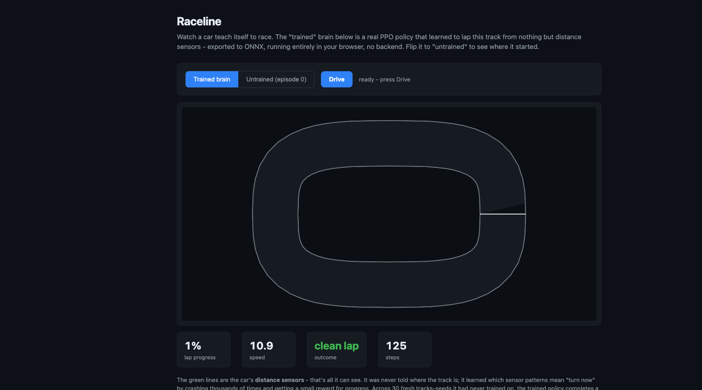

Raceline - Report
A car that taught itself to lap a track from nothing but distance sensors, vs the untrained brain it started with and a hand-coded heuristic. Generated 2026-06-29 from runs/ppo/eval.json + the live in-browser demo.
Headline result. After ~4 minutes of training on a laptop CPU, the PPO
policy completes a clean lap on 100% of 30 held-out seeds with zero crashes.
The untrained brain and a hand-coded heuristic crash inside the first corner every time.
The result (30 seeds, IQM with 95% bootstrap CI)
IQM = interquartile mean (robust per Agarwal et al. rliable). Each driver ran on 30 fresh seeds disjoint from training.
| Driver | Laps completed | Crash rate | Lap progress | Lap time (steps) |
|---|---|---|---|---|
| Raceline (PPO) | 1.00 [1.00, 1.00] | 0.00 [0.00, 0.00] | 1.00 | 127 [126, 128] |
| Longest-ray heuristic | 0.00 | 1.00 | 0.06 | 800 (never) |
| Random | 0.00 | 1.00 | 0.04 | 800 (never) |
100%
of seeds completed a full lap
0
crashes across all 30 seeds
CIs separate
RL laps CI [1.00,1.00] vs heuristic [0.00,0.00]
~4 min
training time on a laptop CPU
The demo: untrained vs trained, same track
The trained PPO policy exported to a 22 KB ONNX graph, running client-side via onnxruntime-web - no backend. Toggling the brain on the same track:
| Brain | Outcome | Steps survived |
|---|---|---|
| Trained (PPO) | clean lap | 125 |
| Untrained (episode 0, random) | crashed | 26 |
The green lines are the car's distance sensors - the only thing it can see. It learned which sensor patterns mean "turn now" purely by crashing and being rewarded for progress.

How this was produced (reproducible)
| Step | Command |
|---|---|
| Env self-test | python -m raceline.envs.racetrack_env --selftest |
| Train PPO (600k steps, ~4 min CPU) | python -m raceline.train --config configs/ppo.yaml |
| Evaluate (30 seeds + CIs) | python -m raceline.eval --checkpoint runs/ppo/best_model.zip |
| Export to ONNX (22 KB) | python -m raceline.export_onnx --checkpoint runs/ppo/best_model.zip --out web/policy.onnx |
| Tests | pytest tests/ -q → 12 passed |
Honest caveats
- One track (a rounded oval). It is not yet shown to generalize to a track it never trained on - that's the Phase 5 generalization test.
- The car physics is a simplified kinematic model (no tyre slip, instant steering response within the per-step limit). Good enough to make cornering a real skill, not a faithful vehicle sim.
- "Lap time" is steps-to-first-lap; drivers that never finish are charged the full 800-step budget, which is a floor not a true time.
- Reward weighting was not swept. The progress-vs-time-vs-crash balance is one reasonable point, not a tuned frontier.